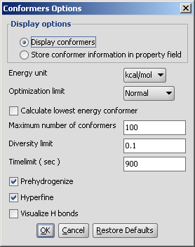
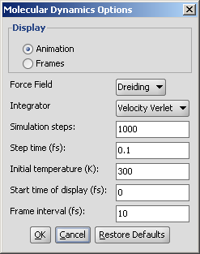
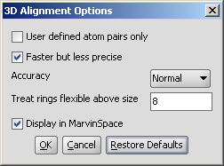

Conformational isomerism is a form of isomerism that describes the phenomenon of molecules with the same structural formula having different shapes due to rotations about one or more bonds. Different conformations might have different energies, can usually interconvert, and are very rarely isolatable.
Conformer plugin generates selected number of conformers or
the lowest energy conformer of a molecule. For conformer calculation
Dreiding force field is used.
Different calculation parameters can be set in the Conformers Options panel:
|  |
Display conformers: conformers are displayed in a MarivnView window.
Store conformer information in property field: the conformer data are calculated and stored with the structures. This option provides the calculations needed to select a specific conformer when using 3D cleaning ˙(menu item Structure > Clean 3D > Display Stored Conformers). The conformers will only be stored if you select one result and click on "Select".
Optimization limit: set the optimization to loose, normal, strict very strict (in this order increasing calculation times and precisity).
Calculate lowest energy conformer: calculates and displays only the lowest energy conformer structure. When checking this option, max. number if conformers and diversity limit are disabled.
Maximum numbers of conformers: limiting the number of calculated structures.
Diversity limit: conformers within diversity limit will be considered the same and doubles removed.
Timelimit (s): no conformers will be displayed if the calculation is stopped at the time limit set (e.g. there are too many conformers to calculate, the operation is cancelled after the given time had elapsed).
Prehydrogenize: if checked, converts all implicit hydrogens to explicit hydrogens without removing them after the calculation. If unchecked, no explicit hydrogens will be added.
Hyperfine: inserts more itineration steps in the calculations, gives more precision in results but the needed time becomes longer.
Visualize H bonds: marks intramolecular hydrogen bonds in the conformer where it is likely to occur.
The results appear in a new window, containing all calculated conformers with their energy indicated:
|
The molecular dynamics plugin calculates the configurations of the system by integrating Newton's laws of motion.
The calculation and the display options can be set in the Molecular Dynamics Options panel:
|  |
Display: display mode
Frames: trajectory frames are displayed individually (see above).
Animation: trajectory is displayed as an animation.
Force field: force field used for calculation.
Integrator: integrator type used for solving Newton's laws of motion.
Simulation steps: number of simulation steps.
Step time (fs): time between simulation steps in femtoseconds.
Initial temperature (K): initial temperature of the system in kelvin.
Start time of display (fs): the time of the first simulation frame to be displayed in femtoseconds.
Frame interval (fs): time between displayed simulation frames in femtoseconds.
The result is shown in a new window:
 |
The window is a MarvinView window, with all its funcionalities to reach.
3D Alignment tries to maximize the overlap of atoms of the same type of different molecules. Extended atom types are assigned to each atom to enable chemically more relevant atom pairing. For instance, aromatic nitrogen atom is not matched against a tertiary amine. Types differentiate atomic number, hybridization state and aromaticity, eg. ethene and benzene cannot be aligned. (These extended atom types correspond to the ones used in Dreiding force field.)
If you first define atom pairings between molecules using the reaction arrow (Mapping atoms), they will be considered during alignment and they can facilitate the alignment, or can be used exclusively, without AutoAlign.
If you have molecules in separate files, you have to merge them into a file. Use
molconvert to create this file. The command
molconvert mrv m1.mol -R m2.mol -o m_all.mrvmerges files m1.mol and m2.mol into m_all. mrv containing all structures as fragments of one molecule.
Following options can be set in the 3D Alignment Options panel:
|  |
{kind=link}